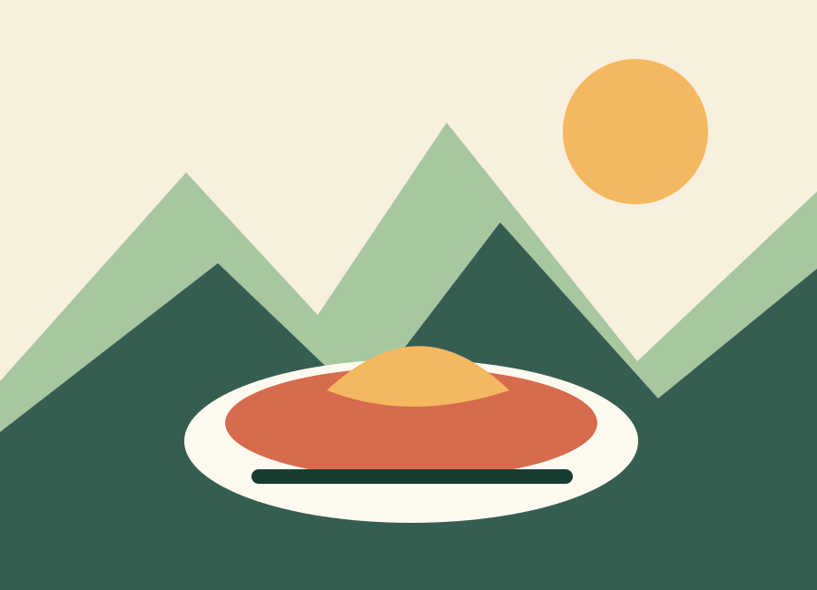

L’accueil
Une bonne adresse est d’abord un lieu où l’on a envie de revenir et d’envoyer ses proches.
La sélection personnelle
Mes restaurants et lieux favoris à La Giettaz, au col des Aravis et à La Clusaz.
Cette sélection est éditoriale et non exhaustive. Elle ne classe pas les établissements. Vérifiez les jours d’ouverture et réservez directement auprès de chaque adresse.

Chargement de la sélection…
Les textes expriment un avis personnel. Aucun établissement n’est présenté comme « meilleur » de manière objective. Les éventuels partenariats devront être signalés directement sur la fiche concernée.
Comment je choisis
Une bonne adresse est d’abord un lieu où l’on a envie de revenir et d’envoyer ses proches.
Produits, histoire du lieu, vue, savoir-faire ou personnalité de ceux qui le font vivre.
Les invitations, partenariats ou contenus sponsorisés sont indiqués sans ambiguïté.